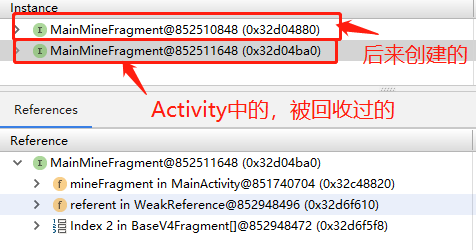
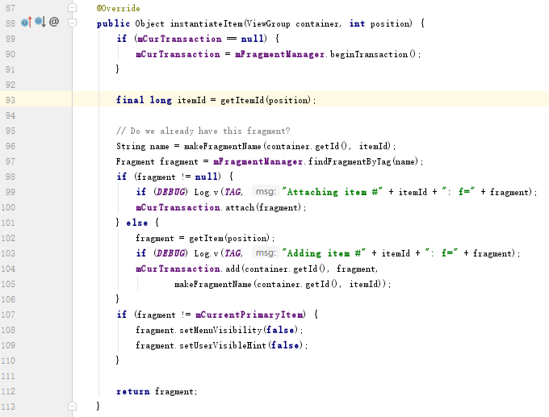

1，参考
Fragment缓存(一)
Fragment缓存(二)
2，现象
点击tab切换，界面不会更新
切换到其他Activity，回来，界面也不会更新
查看内存，现象如下

3，发生条件
当前界面，退出后台；logcat界面，点击清除内存，重新进入
手机-设置-开发者选项-不保留活动；当前界面，退出后台，重新进入
4，问题分析
FragmentPagerAdapter缓存了Fragment，代码如下

5，解决代码
private class MainPagerAdapter extends FragmentPagerAdapter {
private static final int TAB_HOME = 0;
private static final int TAB_FINANCE = 1;
private static final int TAB_MINE = 2;
private static final int COUNT = 3;
private ViewPager viewPager;
private BaseV4Fragment[] fragmentArray = new BaseV4Fragment[COUNT];
private MainPagerAdapter(FragmentManager fm, ViewPager viewPager) {
super(fm);
this.viewPager = viewPager;
}
@Override
public Fragment getItem(int position) {
switch (position) {
case TAB_HOME:
return MainHomeFragment.getInstance(); // 首页
case TAB_FINANCE:
return MainFinanceFragment.getInstance(); // 理财
case TAB_MINE:
return MainMineFragment.getInstance(); // 我的
default:
return MainMineFragment.getInstance();
}
}
@NonNull
@Override
public Object instantiateItem(ViewGroup container, int position) {
BaseV4Fragment fragment = (BaseV4Fragment) super.instantiateItem(container, position);
fragmentArray[position] = fragment; // 利用缓存，获取值
return fragment;
}
@Override
public int getCount() {
return fragmentArray.length;
}
// 刷新先检测fragment,是否为null
private void refreshFinancePage(boolean refresh) {
Fragment fragment = fragmentArray[TAB_FINANCE];
if (null == fragment && null != viewPager) {
fragment = (Fragment) super.instantiateItem(viewPager, TAB_FINANCE);
}
if (fragment instanceof MainFinanceFragment) {
((MainFinanceFragment) fragment).refreshPage(refresh);
}
}
}